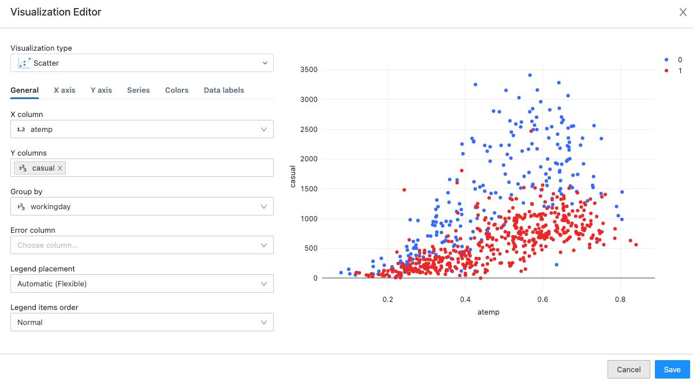
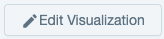
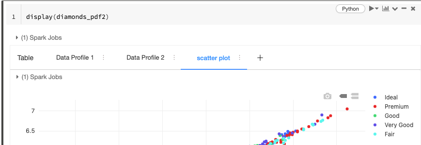

Visualizations in Databricks notebooks
Databricks has built-in support for charts and visualizations in both Databricks SQL and in notebooks. This page describes how to work with visualizations in a Databricks notebook. For information about using visualizations in Databricks SQL, see Visualization in Databricks SQL.
To view the types of visualizations, see visualization types.
Important
For information about a preview version of Databricks charts, see preview chart visualizations.
Create a new visualization
To recreate the example in this section, use the following code:
sparkDF = spark.read.csv("/databricks-datasets/bikeSharing/data-001/day.csv", header="true", inferSchema="true")
display(sparkDF)
To create a visualization, click + above a result and select Visualization. The visualization editor appears.
In the Visualization Type drop-down, choose a type.
Select the data to appear in the visualization. The fields available depend on the selected type.
Click Save.
Create a new data profile
Note
Available in Databricks Runtime 9.1 LTS and above.
Data profiles display summary statistics of an Apache Spark DataFrame, a pandas DataFrame, or a SQL table in tabular and graphic format. To create a data profile from a results cell, click + and select Data Profile.
Databricks calculates and displays the summary statistics.
Numeric and categorical features are shown in separate tables.
At the top of the tab, you can sort or search for features.
At the top of the chart column, you can choose to display a histogram (Standard) or quantiles.
Check expand to enlarge the charts.
Check log to display the charts on a log scale.
You can hover your cursor over the charts for more detailed information, such as the boundaries of a histogram column and the number of rows in it, or the quantile value.
You can also generate data profiles programmatically; see summarize command (dbutils.data.summarize).
Work with visualizations and data profiles
Note
Data profiles are available in Databricks Runtime 9.1 LTS and above.
Rename, duplicate, or remove a visualization or data profile
To rename, duplicate, or remove a visualization or data profile, click the downward pointing arrow at the right of the tab name.
You can also change the name by clicking directly on it and editing the name in place.
Edit a visualization
Click  beneath the visualization to open the visualization editor. When you have finished making changes, click Save.
Edit colors
You can customize a visualization’s colors when you create the visualization or by editing it.
Create or edit a visualization.
Click Colors.
To modify a color, click the square and select the new color by doing one of the following:
Click it in the color selector.
Enter a hex value.
Click anywhere outside the color selector to close it and save changes.
Download a visualization
To download a visualization in .png format, click the camera icon in the notebook cell or in the visualization editor.
In a result cell, the camera icon appears at the upper right when you move the cursor over the cell.
In the visualization editor, the camera icon appears when you move the cursor over the chart. See Visualization tools.
Add a visualization or data profile to a dashboard
Click the downward pointing arrow at the right of the tab name.
Select Add to dashboard. A list of available dashboard views appears, along with a menu option Add to new dashboard.
Select a dashboard or select Add to new dashboard. The dashboard appears, including the newly added visualization or data profile.